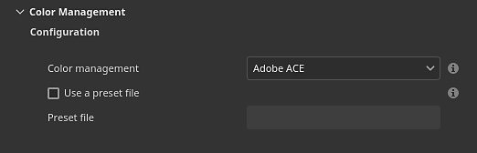
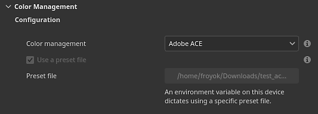

This page lists the color management settings related to the Adobe Color Engine (ACE) to use image with ICC profiles.

The project settings can be set when creating a new project via the new project window or by using the project configuration window.
If an environment variable (see below) or a preset file is loaded, the settings in the UI will be disabled.
The available settings are:
| Section | Setting | Description |
|---|---|---|
| Configuration | Color management | Define which engine to use to manage colors. Possible values:
|
| Use a preset file | If enabled, allow tod rive the color management settings via a json configuration file. | |
| Preset file | Path to the preset file, in json format. For more details, see below. | |
| Color settings | Working color space | The color space used by the engine to work inside the application. This the color space from which textures may be converted to (import) or from (export). Possible values are:
|
| Rendering intent | Specify the method used to convert color between color spaces. Possible values:
| |
| Bitmap import color space defaults | 8 bit images | Color space to use by default when importing 8bit image files. |
| 16 bit images | Color space to use by default when importing 16bit image files. | |
| Floating point images | Color space to use by default when importing HDR/EXR image files. | |
| Use embedded ICC profiles when available (recommended) | If enabled, use the ICC profiles since the image file to adjust their colors. | |
| Substance material | Material color space default | Define which color space to use for Substance materials color managed input/output. |
| Export color space | 8 bit images | Color space to use by default when exporting 8bit image files. |
| 16 bit images | Color space to use by default when exporting 16bit image files. | |
| Floating point images | Color space to use by default when exporting HDR/EXR image files. |

It possible to use a preset file (in json format) to drive the ACE settings when creating new projects.
The environment variable PAINTER_ACE_CONFIG can be used to specify the path of a preset file. If present, the application will always use a preset file to drive the Color management settings. The settings will be disabled in the interface.
For more details see the Environment variables page.
Below is an example of a json file that can be used a preset file:
{
"color settings": {
"working color space": "Linear Adobe RGB (1998)",
"rendering intent": "Saturation"
},
"bitmap import color space defaults" : {
"8 bit images": "image P3",
"16 bit images": "image P3",
"floating point images": "Raw",
"use embedded ICC profiles when available": false
},
"substance material": {
"material color space default": "image P3"
},
"export colors spaces" : {
"8 bit images": "image P3",
"16 bit images": "image P3",
"floating point images": "Raw"
}
}